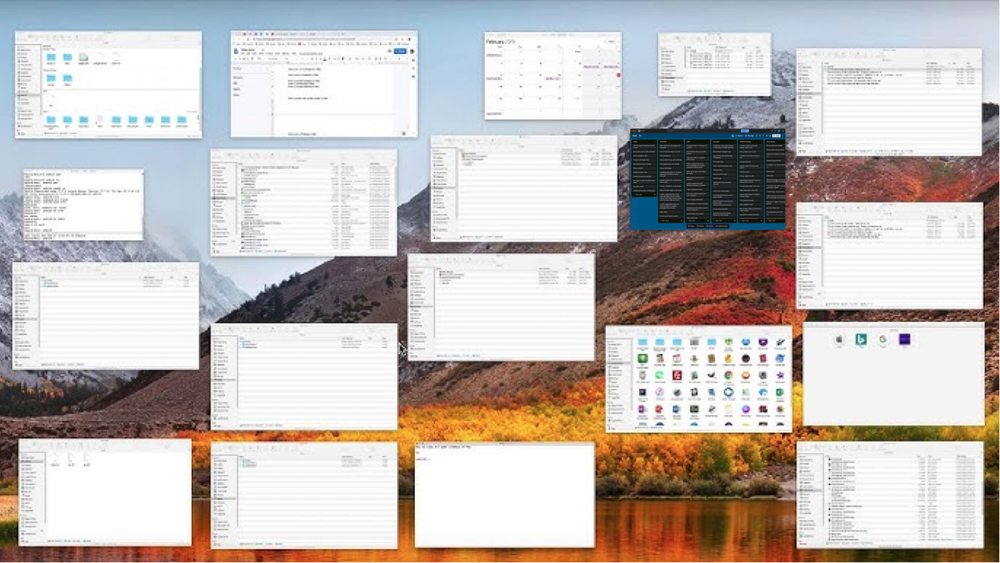
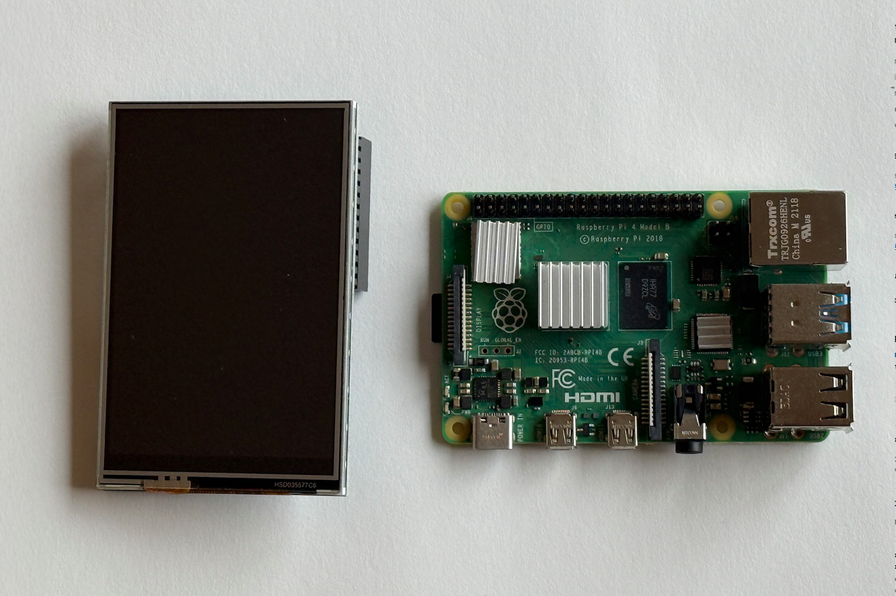
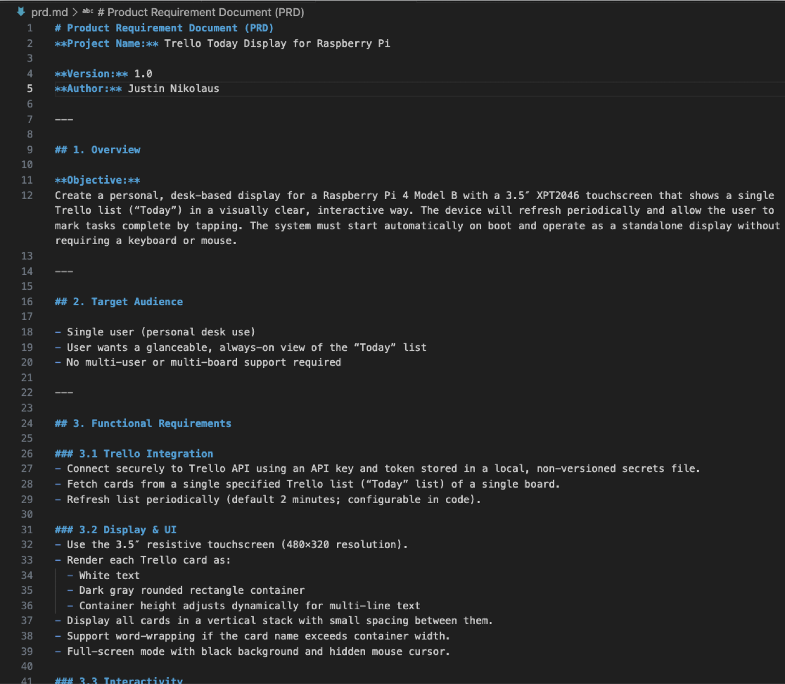
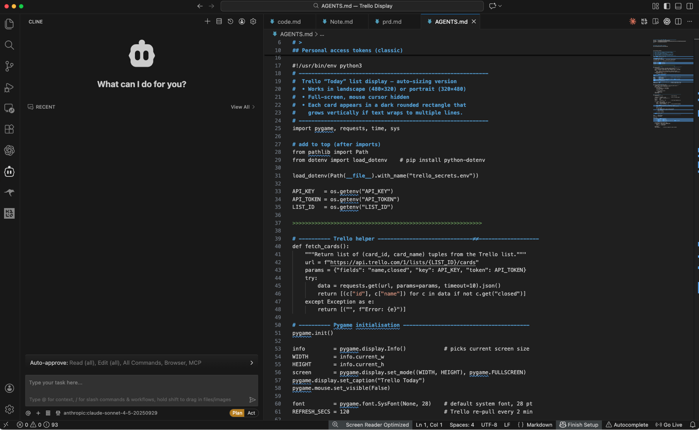
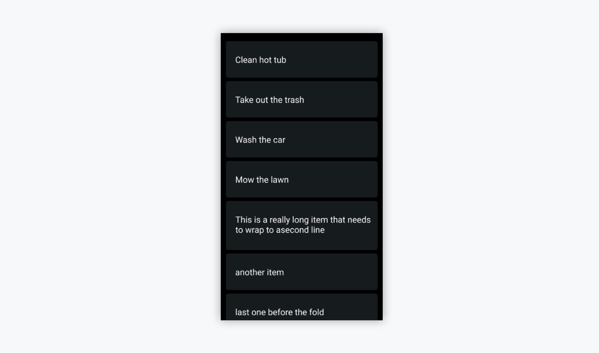
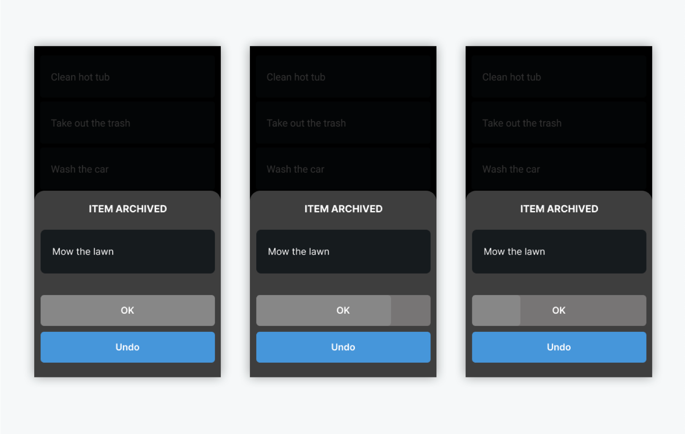
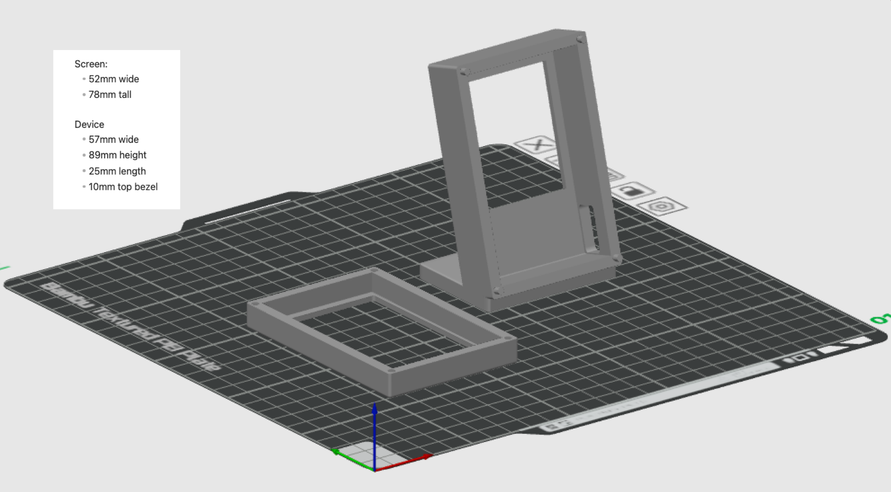

Overview
Trello is available on mobile, desktop, and web, but seeing my to-do list always means managing windows or pulling out my phone. I wanted something simpler: a small dedicated screen on my desk that always shows my current list. Like a digital Post-it note stuck to my monitor. It was also a good excuse to build another Raspberry Pi project.

Hardware
The component stack is straightforward: a Raspberry Pi 4 Model B, a 3.5-inch TFT LCD display, a MicroSD card, a Micro HDMI cable, and a USB-C power supply. I chose components small enough to sit on a desk without competing for workspace.

Process: Spec-Driven AI Development
All project documentation lives in markdown files: meeting notes, drafts, project history, and preferences. This means any file can be included as context for an LLM. The approach starts with defining goals, users, and constraints in a PRD, then translating the design into functional requirements and mockups. Those artifacts become structured inputs for the AI coding agent. I think of it as vibe coding with more definition. Structure reduces randomness, specs become prompts, and design artifacts become instructions.

The development environment was VS Code with the Cline extension running Claude Sonnet 4, connected to the Raspberry Pi via SSH. Working directly on the device avoided compatibility issues between development and production environments. Version control was handled through my public GitHub repo.

Design
The UI is dark so it does not glare while working at night. It stays simple and consistent with Trello's visual language so there is no mental disconnect between the app and the display. The software connects to the Trello API with a private key to pull the to-do list directly.

Scope
The original goal was view-only, but the need to mark items as done became immediately obvious. I added the ability to archive (complete) items from the display. I kept scope small by not including the ability to add new items, since there is already a flow for that through the Trello app and a voice shortcut bound to my iPhone's action button.

Enclosure
The enclosure I modeled in Fusion 360 and printed on a Bambu P1S. I used simple pin connections to allow the back panel to detach for accessing the hardware. Next time I would use magnets instead to reduce stress on the small connection points.

Result
The Trello Deskboard is currently running on my desk in my home office. It does exactly what I wanted: my to-do list is always visible without touching a phone or managing windows. Next updates include simplifying the archive UI by replacing the confirmation dialog with a single undo button and countdown, and adding presence detection via a mmWave sensor to turn the screen off when I leave the room, which helps with thermals and hardware longevity.